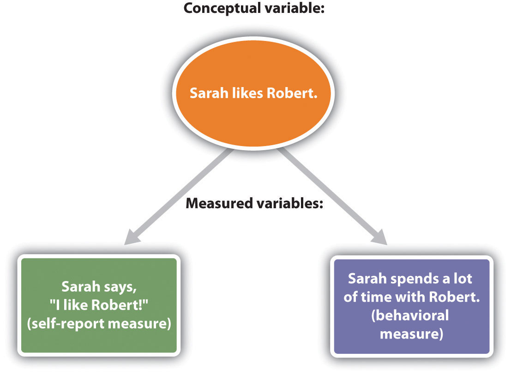
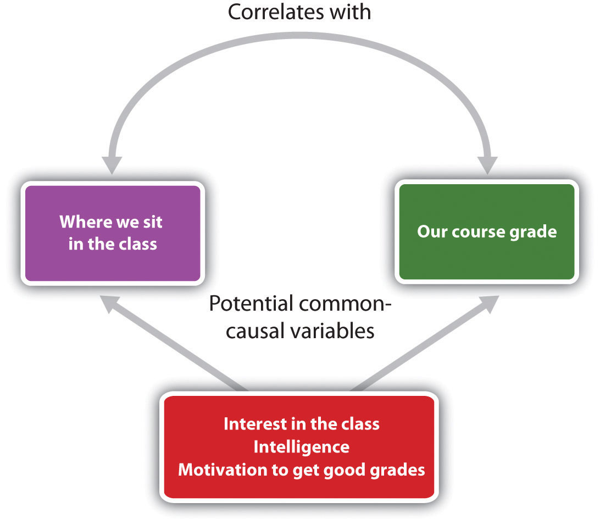
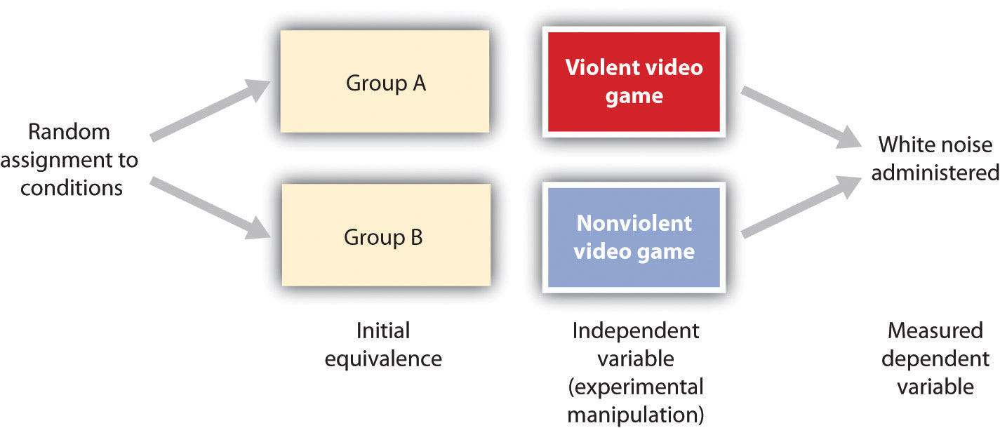
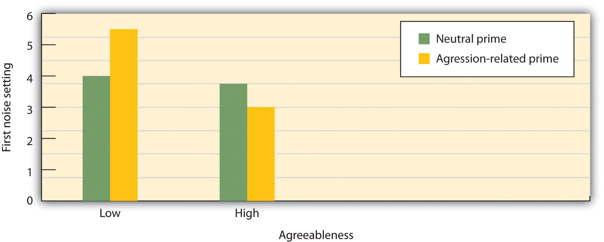
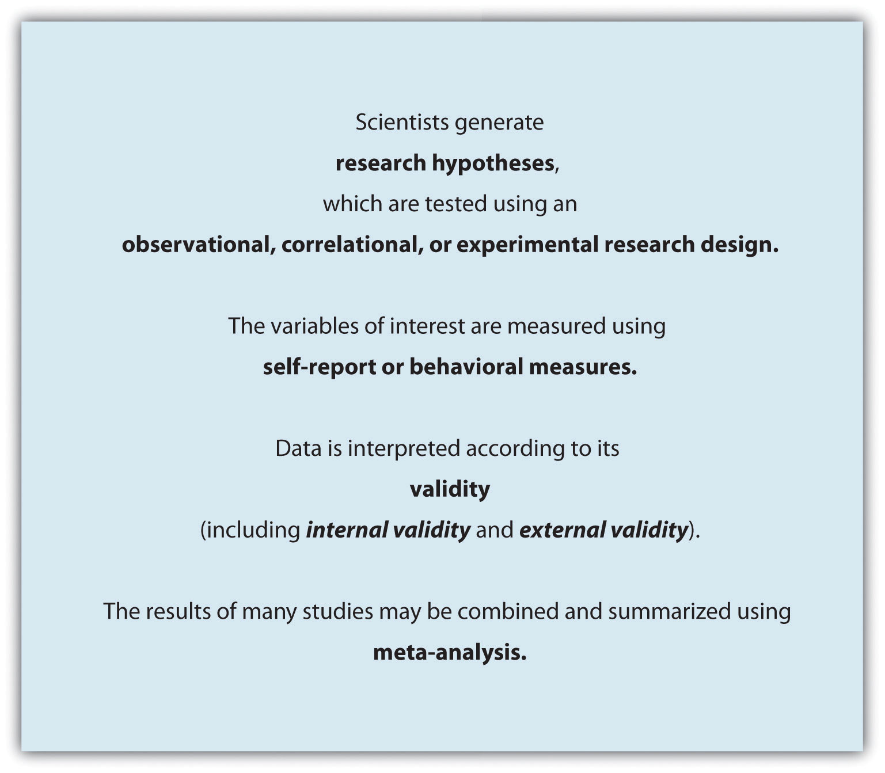

On March 26, 1997, people were found dead in a house on a hilltop in San Diego, California. The people were members of a cult and were part of a carefully orchestrated suicide that involved sedatives, vodka, and plastic bags. There were 21 women and 18 men, and they had come to California from across the country. Most of the victims were in their 40s, but ages ranged from 26 to 72.
The name of the cult was “Heaven’s Gate,” and it also operated a computer web service called “Higher Source.” The victims evidently believed that they were going to meet a UFO hiding behind the comet Hale-Bopp, and the suicides occurred during the time that the comet was closest to earth.
The suicide probably took place over three days and seemed to have been calm and ritualistic. One group of cult members apparently helped some other members die, cleaned up after them, and then went on to take their own doses of poison, which was mixed with apple sauce or pudding. The last two victims had plastic bags over their heads.
“It seemed to be a group decision,” said Dr. Brian Blackbourne, San Diego County medical examiner.
“There were different stages, suggesting it was planned. They all had IDs. The house was immaculate.”
“We’re not talking about a drug-crazed, party-time situation…The drugs were taken for a very specific purpose and that was to take their own lives.”
The victims all wore black pants and black Nike sports shoes, and their faces and chests were covered in purple shrouds. The victims had carefully packed their bags and placed their few possessions at their sides. Most of the victims had a $5 bill and some quarters in their pockets.
There was no blood found at the scene, and the only weapon in the home was a 9 mm pistol packed in a bag.
Jerry Lipscomb of the San Diego Sheriff’s Department told CNN, “What we’re finding is that each and every one of the members of the organization, prior to their death, gave a brief statement…The essence of those statements was that they were going to a better place.”
“It’s our opinion that it was their intent—they planned to do this.”
Source: Mass suicide involved sedatives, vodka and careful planning. CNN.com. Retrieved from http://edition.cnn.com/US/9703/27/suicide/index.html.

Bodies are removed from the scene of the 1997 Heaven’s Gate cult suicide.
Source: Used with permission from AP Photo.
Social psychologyThe scientific study of how we feel about, think about, and behave toward the people around us and how our feelings, thoughts, and behaviors are influenced by those people. is the scientific study of how we feel about, think about, and behave toward the people around us and how our feelings, thoughts, and behaviors are influenced by those people. As this definition suggests, the subject matter of social psychology is very broad and can be found in just about everything that we do every day. Social psychologists study why we are often helpful to other people and why we may at other times be unfriendly or aggressive. Social psychologists study both the benefits of having good relationships with other people and the costs of being lonely. Social psychologists study what factors lead people to purchase one product rather than another, how men and women behave differently in social settings, how juries work together to make important group decisions, and what makes some people more likely to recycle and engage in other environmentally friendly behaviors than others. And social psychologists also study more unusual events, such as how some people can be persuaded that a UFO is hiding behind a comet, leading them to take their own lives as part of a suicide cult.
The goal of this book is to help you learn to think about social behaviors in the same way that social psychologists do. I believe you will find this approach useful because it will allow you to think about human behavior more critically and more objectively and to gain insight into your own relationships with other people. Social psychologists study everyday behavior scientifically, and their research creates a useful body of knowledge about our everyday social interactions.
The field of social psychology is growing rapidly and is having an increasingly important influence on how we think about human behavior. Newspapers, websites, and other media frequently report the findings of social psychologists, and the results of social psychological research are influencing decisions in a wide variety of areas. Let’s begin with a short history of the field of social psychology and then turn to a review of the basic principles of the science of social psychology.
The science of social psychology began when scientists first started to systematically and formally measure the thoughts, feelings, and behaviors of human beings (Kruglanski & Stroebe, 2011).Kruglanski, A., & Stroebe, W. (2011). Handbook of the history of social psychology. Philadelphia, PA: Psychology Press. The earliest social psychology experiments on group behavior were conducted before 1900 (Triplett, 1898),Triplett, N. (1898). The dynamogenic factors in pacemaking and competition. American Journal of Psychology, 9(4), 507–533. and the first social psychology textbooks were published in 1908 (McDougall, 1908/2003; Ross, 1908/1974).McDougall, W. (2003; original published 1908). An introduction to social psychology. Mineola, NY: Dover; Ross, E. A. (1974; original published 1908). Social psychology. New York, NY: Arno Press. During the 1940s and 1950s, the social psychologists Kurt Lewin and Leon Festinger refined the experimental approach to studying behavior, creating social psychology as a rigorous scientific discipline. Lewin is sometimes known as “the father of social psychology” because he initially developed many of the important ideas of the discipline, including a focus on the dynamic interactions among people. In 1954, Festinger edited an influential book called Research Methods in the Behavioral Sciences, in which he and other social psychologists stressed the need to measure variables and to use laboratory experiments to systematically test research hypotheses about social behavior. He also noted that it might be necessary in these experiments to deceive the participants about the true nature of the research.

The field of social psychology began with pioneers such as Kurt Lewin and Leon Festinger and continues today in research labs across the world.
Source:Photo of Lewin may be found at http://commons.wikimedia.org/wiki/File:Kurt_Lewin.jpg; Photo of Festinger used with permission from AP Photo.
Social psychology was energized by researchers who attempted to understand how the German dictator Adolf Hitler could have produced such extreme obedience and horrendous behaviors in his followers during the Second World War. The studies on conformity conducted by Muzafir Sherif (1936)Sherif, M. (1936). The psychology of social norms. New York, NY: Harper & Row. and Solomon Asch (1952),Asch, S. E. (1952). Social psychology. Englewood Cliffs, NJ: Prentice-Hall. as well as those on obedience by Stanley Milgram (1974),Milgram, S. (1974). Obedience to authority: An experimental view. New York, NY: Harper & Row. showed the importance of conformity pressures in social groups and how people in authority could create obedience, even to the extent of leading people to cause severe harm to others. Philip Zimbardo, in his well-known “prison experiment” (Haney, Banks, & Zimbardo, 1973),Haney, C., Banks, C., & Zimbardo, P. (1973). Interpersonal dynamics in a simulated prison. International Journal of Criminology and Penology, 1, 69–87. found that ordinary male college students who were recruited to play the roles of guards and prisoners in a simulated prison became so involved in their assignments, and their interaction became so violent, that the study had to be terminated early (Note 1.4 "Video Clip 1"). This research again demonstrated the power of the social setting.
(click to see video)
The Stanford prison experiment conducted by Philip Zimbardo in the 1960s demonstrated the powerful role of the social situation on human behavior.
Social psychology quickly expanded to study other topics. John Darley and Bibb Latané (1968)Darley, J. M., & Latané, B. (1968). Bystander intervention in emergencies: Diffusion of responsibility. Journal of Personality and Social Psychology, 8(4, Pt. 1), 377–383. developed a model that helped explain when people do and do not help others in need, and Leonard Berkowitz (1974)Berkowitz, L. (1974). Aggression: A social psychological analysis. New York, NY: McGraw-Hill. pioneered the study of human aggression. Meanwhile, other social psychologists, including Irving Janis (1972),Janis, I. L. (1972). Victims of groupthink: A psychological study of foreign policy decisions and fiascos. Boston, MA: Houghton-Mifflin. focused on group behavior, studying why intelligent people sometimes made decisions that led to disastrous results when they worked together. Still other social psychologists, including Gordon Allport and Muzafir Sherif, focused on intergroup relations, with the goal of understanding and potentially reducing the occurrence of stereotyping, prejudice, and discrimination. Social psychologists gave their opinions in the 1954 Brown v. Board of Education Supreme Court case that helped end racial segregation in U.S. public schools, and social psychologists still frequently serve as expert witnesses on these and other topics (Fiske, Bersoff, Borgida, Deaux, & Heilman, 1991).Fiske, S. T., Bersoff, D. N., Borgida, E., Deaux, K., & Heilman, M. E. (1991). Social science research on trial: The use of sex stereotyping research in Price Waterhouse vs. Hopkins. American Psychologist, 46, 1049–1060.
The latter part of the 20th century saw an expansion of social psychology into the field of attitudes, with a particular emphasis on cognitive processes. During this time, social psychologists developed the first formal models of persuasion, with the goal of understanding how advertisers and other people could present their messages to make them most effective (Eagly & Chaiken, 1993; Hovland, Janis, & Kelley, 1963).Eagly, A. H., & Chaiken, S. (1993). The psychology of attitudes. Fort Worth, TX: Harcourt Brace Jovanovich; Hovland, C. I., Janis, I. L., & Kelley, H. H. (1963). Communication and persuasion. Oxford, England: Yale University Press. These approaches to attitudes focused on the cognitive processes that people use when evaluating messages and on the relationship between attitudes and behavior. Leon Festinger’s (1957)Festinger, L. (1957). A theory of cognitive dissonance. Evanston, IL: Row, Peterson. important cognitive dissonance theory was developed during this time and became a model for later research.
In the 1970s and 1980s, social psychology became even more cognitive in orientation as social psychologists used advances in cognitive psychology, which were themselves based largely on advances in computer technology, to inform the field (Fiske & Taylor, 2008).Fiske, S. T., & Taylor, S. E. (2008). Social cognition: From brains to culture. Boston, MA: McGraw-Hill. The focus of these researchers, including Alice Eagly, Susan Fiske, E. Tory Higgins, Richard Nisbett, Lee Ross, Shelley Taylor, and many others, was on social cognition—an understanding of how our knowledge about our social worlds develops through experience and the influence of these knowledge structures on memory, information processing, attitudes, and judgment. Furthermore, the extent to which humans’ decision making could be flawed by both cognitive and motivational processes was documented (Kahneman, Slovic, & Tversky, 1982).Kahneman, D., Slovic, P., & Tversky, A. (1982). Judgment under uncertainty: Heuristics and biases. Cambridge, England: Cambridge University Press.

The field of social psychology continues today in the research labs of Marilynn Brewer, Dan Gilbert, Alice Eagly, Mahzarin Banaji, and others.
In the 21st century, the field of social psychology has been expanding into still other areas. Examples that we will consider in this book include an interest in how social situations influence our health and happiness, the important roles of evolutionary experiences and cultures on our behavior, and the field of social neuroscienceThe study of how our social behavior both influences and is influenced by the activities of our brain.—the study of how our social behavior both influences and is influenced by the activities of our brain (Lieberman, 2010).Lieberman, M. D. (2010). Social cognitive neuroscience. In S. T. Fiske, D. T. Gilbert, & G. Lindzey (Eds.), Handbook of social psychology (5th ed., Vol. 1, pp. 143–193). Hoboken, NJ: John Wiley & Sons. Social psychologists continue to seek new ways to measure and understand social behavior, and the field continues to evolve. I cannot predict where social psychology will be directed in the future, but I have no doubt that it will still be alive and vibrant.
Social psychology is the study of the dynamic relationship between individuals and the people around them (see Figure 1.1 "The Person-Situation Interaction"). Each of us is different, and our individual characteristics, including our personality traits, desires, motivations, and emotions, have an important impact on our social behavior. But our behavior is also profoundly influenced by the social situationThe people with whom we interact every day.—the people with whom we interact every day. These people include our friends and family, our fraternity brothers or sorority sisters, our religious groups, the people we see on TV or read about or interact with on the web, as well as people we think about, remember, or even imagine.
Figure 1.1 The Person-Situation Interaction

Social psychologists believe that human behavior is determined by both a person’s characteristics and the social situation. They also believe that the social situation is frequently a stronger influence on behavior than are a person’s characteristics.
Social psychology is largely the study of the social situation. Our social situations create social influenceThe processes through which other people change our thoughts, feelings, and behaviors and through which we change theirs., the process through which other people change our thoughts, feelings, and behaviors and through which we change theirs. Maybe you can already see how the social influence provided by the members of the Heaven’s Gate cult was at work in the Hale-Bopp suicide.
Kurt Lewin formalized the joint influence of person variables and situational variables, which is known as the person-situation interaction, in an important equation:
Behavior = f (person, social situation).Lewin’s equation indicates that the behavior of a given person at any given time is a function of (depends on) both the characteristics of the person and the influence of the social situation.
In Lewin’s equation, person refers to the characteristics of the individual human being. People are born with skills that allow them to successfully interact with others in their social world. Newborns are able to recognize faces and to respond to human voices, young children learn language and develop friendships with other children, adolescents become interested in sex and are destined to fall in love, most adults marry and have children, and most people usually get along with others.
People have these particular characteristics because we have all been similarly shaped through human evolution. The genetic code that defines human beings has provided us with specialized social skills that are important to survival. Just as keen eyesight, physical strength, and resistance to disease helped our ancestors survive, so too did the tendency to engage in social behaviors. We quickly make judgments about other people, help other people who are in need, and enjoy working together in social groups because these behaviors helped our ancestors to adapt and were passed along on their genes to the next generation (Ackerman & Kenrick, 2008; Barrett & Kurzban, 2006; Pinker, 2002).Ackerman, J. M., & Kenrick, D. T. (2008). The costs of benefits: Help-refusals highlight key trade-offs of social life. Personality and Social Psychology Review, 12(2), 118–140; Barrett, H. C., & Kurzban, R. (2006). Modularity in cognition: Framing the debate. Psychological Review, 113(3), 628–647; Pinker, S. (2002). The blank slate: The modern denial of human nature. New York, NY: Penguin Putnam. Our extraordinary social skills are primarily due to our large brains and the social intelligence that they provide us with (Herrmann, Call, Hernández-Lloreda, Hare, & Tomasello, 2007).Herrmann, E., Call, J., Hernández-Lloreda, M. V., Hare, B., & Tomasello, M. (2007). Humans have evolved specialized skills of social cognition: The cultural intelligence hypothesis. Science, 317(5843), 1360–1366.
The assumption that human nature, including much of our social behavior, is determined largely by our evolutionary past is known as evolutionary adaptationThe assumption that human nature, including much of our social behavior, is determined largely by evolution. (Buss & Kenrick, 1998; Workman & Reader, 2008).Buss, D., & Kenrick, D. (1998). Evolutionary social psychology. In D. T. Gilbert, S. T. Fiske, & G. Lindzey (Eds.), Handbook of social psychology (4th ed., Vol. 2, pp. 982–1026). Boston, MA: McGraw-Hill; Workman, L., & Reader, W. (2008). Evolutionary psychology: An introduction (2nd ed.).. New York, NY: Cambridge University Press. In evolutionary theory, fitnessThe extent to which having a given characteristic helps the individual organism to survive and to reproduce at a higher rate than do other members of the species who do not have the characteristic.refers to the extent to which having a given characteristic helps the individual organism to survive and to reproduce at a higher rate than do other members of the species who do not have the characteristic. Fitter organisms pass on their genes more successfully to later generations, making the characteristics that produce fitness more likely to become part of the organisms’ nature than are characteristics that do not produce fitness. For example, it has been argued that the emotion of jealousy has survived over time in men because men who experience jealousy are more fit than men who do not. According to this idea, the experience of jealousy leads men to protect their mates and guard against rivals, which increases their reproductive success (Buss, 2000).Buss, D. M. (2000). The dangerous passion: Why jealousy is as necessary as love and sex. New York, NY: Free Press.
Although our biological makeup prepares us to be human beings, it is important to remember that our genes do not really determine who we are. Rather, genes provide us with our human characteristics, and these characteristics give us the tendency to behave in a “human” way. And yet each human being is different from every other human being.
Evolutionary adaption has provided us with two fundamental motivations that guide us and help us lead productive and effective lives. One of these motivations relates to the self—the motivation to protect and enhance the self and the people who are psychologically close to us; the other relates to the social situation—the motivation to affiliate with, accept, and be accepted by others. We will refer to these two motivations as self-concernThe motivation to protect and enhance the self and others who are close to us. and other-concernThe motivation to affiliate with, accept, and be accepted by others. respectively.
The most basic tendency of all living organisms, and the focus of the first human motivation, is the desire to protect and enhance one’s own life and the lives of the people who are close to us. Humans are motivated to find food and water, to obtain adequate shelter, and to protect themselves from danger. Doing so is necessary because we can survive only if we are able to meet these fundamental goals.
The desire to maintain and enhance the self also leads us to do the same for our relatives—those people who are genetically related to us. Human beings, like other animals, exhibit kin selectionStrategies that favor the reproductive success of one’s relatives, sometimes at a cost to the survival of the individual.—strategies that favor the reproductive success of one’s relatives, sometimes even at a cost to the individual’s own survival. According to evolutionary principles, kin selection occurs because behaviors that enhance the fitness of relatives, even if they lower the fitness of the individual himself or herself, may nevertheless increase the survival of the group as a whole.
In addition to our kin, we desire to protect, improve, and enhance the well-being of our ingroupOther people whom we view as being similar and important to us and with whom we share close social connections.: those whom we view as being similar and important to us and with whom we share close social connections, even if those people do not actually share our genes. Perhaps you remember a time when you helped friends move all their furniture into a new apartment, even when you would have preferred to be doing something more beneficial for yourself, such as studying or relaxing. You wouldn’t have helped strangers in this way, but you did it for your friends because you felt close to and cared about them. The tendency to help the people we feel close to, even if they are not related to us, is probably due in part to our evolutionary past: The people we were closest to were usually those we were related to.
Although we are primarily concerned with the survival of ourselves, our kin, and those who we feel are similar and important to us, we also desire to connect with and be accepted by other people more generally—the goal of other-concern. We live together in communities, we work together in work groups, we may worship together in religious groups, and we may play together on sports teams and through clubs. Affiliating with other people—even strangers—helps us meet a fundamental goal: that of finding a romantic partner with whom we can have children. Our connections with others also provide us with other opportunities that we would not have on our own. We can go to the grocery to buy milk or eggs, and we can hire a carpenter to build a house for us. And we ourselves do work that provides goods and services for others. This mutual cooperation is beneficial both for us and for the people around us. We also affiliate because we enjoy being with others, being part of social groups, and contributing to social discourse (Leary & Cox, 2008).Leary, M. R., & Cox, C. B. (Eds.). (2008). Belongingness motivation: A mainspring of social action. New York, NY: Guilford Press.
What the other-concern motive means is that we do not always put ourselves first. Being human also involves caring about, helping, and cooperating with other people. Although our genes are themselves “selfish” (Dawkins, 2006),Dawkins, R. (2006). The selfish gene. Oxford, England: Oxford University Press. this does not mean that individuals always are. The survival of our own genes may be improved by helping others, even those who are not related to us (Krebs, 2008; Park, Schaller, & Van Vugt, 2008).Krebs, D. L. (2008). Morality: An evolutionary account. Perspectives on Psychological Science, 3(3), 149–172; Park, J. H., Schaller, M., & Van Vugt, M. (2008). Psychology of human kin recognition: Heuristic cues, erroneous inferences, and their implications. Review of General Psychology, 12(3), 215–235. Just as birds and other animals may give out alarm calls to other animals to indicate that a predator is nearby, humans engage in altruistic behaviors in which they help others, sometimes at a potential cost to themselves.
In short, human beings behave morally toward others—they understand that it is wrong to harm other people without a strong reason for doing so, and they display compassion and even altruism toward others (Goetz, Keltner, & Simon-Thomas, 2010; Turiel, 1983).Goetz, J. L., Keltner, D., & Simon-Thomas, E. (2010). Compassion: An evolutionary analysis and empirical review. Psychological Bulletin, 136(3), 351–374; Turiel, E. (1983). The development of social knowledge: Morality and convention. Cambridge, England: Cambridge University Press. As a result, negative behaviors toward others, such as bullying, cheating, stealing, and aggression, are unusual, unexpected, and socially disapproved. Of course this does not mean that people are always friendly, helpful, and nice to each other—powerful social situations can and do create negative behaviors. But the fundamental human motivation of other-concern does mean that hostility and violence are the exception rather than the rule of human behavior.
Sometimes the goals of self-concern and other-concern go hand in hand. When we fall in love with another person, it is in part about a concern for connecting with someone else but is also about self-concern—falling in love makes us feel good about ourselves. And when we volunteer to help others who are in need, it is in part for their benefit but also for us. We feel good when we help others. At other times, however, the goals of self-concern and other-concern conflict. Imagine that you are walking across campus and you see a man with a knife threatening another person. Do you intervene, or do you turn away? In this case, your desire to help the other person (other-concern) is in direct conflict with your desire to protect yourself from the danger posed by the situation (self-concern), and you must decide which goal to put first. We will see many more examples of the motives of self-concern and other-concern, both working together and working against each other, throughout this book.
When people are asked to indicate the things that they value the most, they usually mention their social situation—that is, their relationships with other people (Baumeister & Leary, 1995; Fiske & Haslam, 1996).Baumeister, R., & Leary, M. (1995). The need to belong: Desire for interpersonal attachments as a fundamental human motivation. Psychological Bulletin, 117, 497–529; Fiske, A. P., & Haslam, N. (1996). Social cognition is thinking about relationships. Current Directions in Psychological Science, 5(5), 137–142. When we work together on a class project, volunteer at a homeless shelter, or serve on a jury in a courtroom trial, we count on others to work with us to get the job done. We develop social bonds with those people, and we expect that they will come through to help us meet our goals. The importance of others shows up in every aspect of our lives—other people teach us what we should and shouldn’t do, what we should and shouldn’t think, and even what we should and shouldn’t like and dislike.
In addition to the people with whom we are currently interacting, we are influenced by people who are not physically present but who are nevertheless part of our thoughts and feelings. Imagine that you are driving home on a deserted country road late at night. No cars are visible in any direction, and you can see for miles. You come to a stop sign. What do you do? Most likely, you stop at the sign, or at least slow down. You do so because the behavior has been internalized: Even though no one is there to watch you, others are still influencing you—you’ve learned about the rules and laws of society, what’s right and what’s wrong, and you tend to obey them. We carry our own personal social situations—our experiences with our parents, teachers, leaders, authorities, and friends—around with us every day.
An important principle of social psychology, one that will be with us throughout this book, is that although individuals’ characteristics do matter, the social situation is often a stronger determinant of behavior than is personality. When social psychologists analyze an event such as a cult suicide, they are likely to focus more on the characteristics of the situation (e.g., the strong leader and the group pressure provided by the other group members) than on the characteristics of the cult members themselves. As an example, we will see that even ordinary people who are neither bad nor evil in any way can nevertheless be placed in situations in which an authority figure is able to lead them to engage in evil behaviors, such as applying potentially lethal levels of electrical shock (Milgram, 1974).Milgram, S. (1974). Obedience to authority: An experimental view. New York, NY: Harper & Row.
In addition to discovering the remarkable extent to which our behavior is influenced by our social situation, social psychologists have discovered that we often do not recognize how important the social situation is in determining behavior. We often wrongly think that we and others act entirely on our own accord, without any external influences. It is tempting to assume that the people who commit extreme acts, such as terrorists or members of suicide cults, are unusual or extreme people. And yet much research suggests that these behaviors are caused more by the social situation than they are by the characteristics of the individuals and that it is wrong to focus so strongly on explanations of individuals’ characteristics (Gilbert & Malone, 1995).Gilbert, D., & Malone, P. (1995). The correspondence bias. Psychological Review, 117, 21–38.
There is perhaps no clearer example of the powerful influence of the social situation than that found in research showing the enormous role that others play in our physical and mental health. Social supportThe comfort that we receive from the people around us—for instance, our family, friends, classmates, and coworkers. refers to the comfort that we receive from the people around us—for instance, our family, friends, classmates, and coworkers (Diener, Suh, Lucas, & Smith, 1999; Diener, Tamir, & Scollon, 2006).Diener, E., Suh, E. M., Lucas, R. E., & Smith, H. L. (1999). Subjective well-being: Three decades of progress. Psychological Bulletin, 125(2), 276–302; Diener, E., Tamir, M., & Scollon, C. N. (2006). Happiness, life satisfaction, and fulfillment: The social psychology of subjective well-being. In P. A. M. Van Lange (Ed.), Bridging social psychology: Benefits of transdisciplinary approaches. Mahwah, NJ: Lawrence Erlbaum Associates.
How the Social Situation Influences Our Mental and Physical Health
In comparison with those who do not feel that they have a network of others they can rely on, people who feel that they have adequate social support report being happier and have also been found to have fewer psychological problems, including eating disorders and mental illness (Diener, Suh, Lucas, & Smith, 1999; Diener, Tamir, & Scollon, 2006).Diener, E., Suh, E. M., Lucas, R. E., & Smith, H. L. (1999). Subjective well-being: Three decades of progress. Psychological Bulletin, 125(2), 276–302; Diener, E., Tamir, M., & Scollon, C. N. (2006). Happiness, life satisfaction, and fulfillment: The social psychology of subjective well-being. In P. A. M. Van Lange (Ed.), Bridging social psychology: Benefits of transdisciplinary approaches. Mahwah, NJ: Lawrence Erlbaum and Associates.
People with social support are less depressed overall, recover faster from negative events, and are less likely to commit suicide (Au, Lau, & Lee, 2009; Bertera, 2007; Compton, Thompson, & Kaslow, 2005; Skärsäter, Langius, Ågren, Häagström, & Dencker, 2005).Au, A., Lau, S., & Lee, M. (2009). Suicide ideation and depression: The moderation effects of family cohesion and social self-concept. Adolescence, 44(176), 851–868. Retrieved from Academic Search Premier Database; Bertera, E. (2007). The role of positive and negative social exchanges between adolescents, their peers and family as predictors of suicide ideation. Child & Adolescent Social Work Journal, 24(6), 523–538. doi:10.1007/s10560-007-0104-y; Compton, M., Thompson, N., & Kaslow, N. (2005). Social environment factors associated with suicide attempt among low-income African Americans: The protective role of family relationships and social support. Social Psychiatry & Psychiatric Epidemiology, 40(3), 175–185. doi:10.1007/s00127-005-0865-6; Skärsäter, I., Langius, A., Ågren, H., Häggström, L., & Dencker, K. (2005). Sense of coherence and social support in relation to recovery in first-episode patients with major depression: A one-year prospective study. International Journal of Mental Health Nursing, 14(4), 258–264. doi:10.1111/j.1440-0979.2005.00390 Married people report being happier than unmarried people (Pew, 2006),Pew Research Center. (2006, February 13). Are we happy yet? Retrieved from http://pewresearch.org/pubs/301/are-we-happy-yet and overall, a happy marriage is an excellent form of social support. One of the goals of effective psychotherapy is to help people generate better social support networks because such relationships have such a positive effect on mental health.
In addition to having better mental health, people who have adequate social support are more physically healthy. They have fewer diseases (such as tuberculosis, heart attacks, and cancer), live longer, have lower blood pressure, and have fewer deaths at all ages (Cohen & Wills, 1985; Stroebe & Stroebe, 1996).Cohen, S., & Wills, T. (1985). Stress, social support, and the buffering hypothesis. Psychological Bulletin, 98, 310–357; Stroebe, W., & Stroebe, M. (1996). The social psychology of social support. In E. T. Higgins & A. W. Kruglanski (Eds.), Social psychology: Handbook of basic principles (pp. 597–621). New York, NY: Guilford Press. Sports psychologists have even found that individuals with higher levels of social support are less likely to be injured playing sports and recover more quickly from injuries they do receive (Hardy, Richman, & Rosenfeld, 1991).Hardy, C. J., Richman, J. M., & Rosenfeld, L. B. (1991). The role of social support in the life stress/injury relationship. The Sports Psychologist, 5, 128–139. These differences appear to be due to the positive effects of social support upon physiological functioning, including the immune system.
The opposite of social support is the feeling of being excluded or ostracized. Feeling that others are excluding us is painful, and the pain of rejection may linger even longer than physical pain. People who were asked to recall an event that caused them social pain (e.g., betrayal by a person very close to them) rated the pain as more intense than they rated their memories of intense physical pain (Chen, Williams, Fitness, & Newton, 2008).Chen, Z., Williams, K. D., Fitness, J., & Newton, N. C. (2008). When hurt will not heal: Exploring the capacity to relive social and physical pain. Psychological Science, 19(8), 789–795. When people are threatened with social exclusion, they subsequently express greater interest in making new friends, increase their desire to work cooperatively with others, form more positive first impressions of new potential interaction partners, and even become more able to discriminate between real smiles and fake smiles (Bernstein, Young, Brown, Sacco, & Claypool, 2008; Maner, DeWall, Baumeister, & Schaller, 2007).Bernstein, M. J., Young, S. G., Brown, C. M., Sacco, D. F., & Claypool, H. M. (2008). Adaptive responses to social exclusion: Social rejection improves detection of real and fake smiles. Psychological Science, 19(10), 981–983; Maner, J. K., DeWall, C. N., Baumeister, R. F., & Schaller, M. (2007). Does social exclusion motivate interpersonal reconnection? Resolving the “porcupine problem.” Journal of Personality and Social Psychology, 92(1), 42–55.
Because connecting with others is such an important part of human experience, we may sometimes withhold affiliation from or ostracize other people in order to attempt to force them to conform to our wishes. When individuals of the Amish religion violate the rulings of an elder, they are placed under a Meidung. During this time, and until they make amends, they are not spoken to by community members. And people frequently use the “silent treatment” to express their disapproval of a friend’s or partner’s behavior. The pain of ostracism is particularly strong in adolescents (Sebastian, Viding, Williams, & Blakemore, 2010).Sebastian, C., Viding, E., Williams, K. D., & Blakemore, S.-J. (2010). Social brain development and the affective consequences of ostracism in adolescence. Brain and Cognition, 72(1), 134–145.
The use of ostracism has also been observed in parents and children, and even in Internet games and chat rooms (Williams, Cheung, & Choi, 2000).Williams, K. D., Cheung, C. K. T., & Choi, W. (2000). Cyberostracism: Effects of being ignored over the Internet. Journal of Personality & Social Psychology, 79(5), 748–762. The silent treatment and other forms of ostracism are popular because they work. Withholding social communication and interaction is a powerful weapon for punishing individuals and forcing them to change their behaviors. Individuals who are ostracized report feeling alone, frustrated, sad, and unworthy and having lower self-esteem (Bastian & Haslam, 2010).Bastian, B., & Haslam, N. (2010). Excluded from humanity: The dehumanizing effects of social ostracism. Journal of Experimental Social Psychology, 46(1), 107–113.
Taken together, then, social psychological research results suggest that one of the most important things you can do for yourself is to develop a stable support network. Reaching out to other people benefits those who become your friends (because you are in their support network) and has substantial benefits for you.
In some cases, social influence occurs rather passively, without any obvious intent of one person to influence the other, such as when we learn about and adopt the beliefs and behaviors of the people around us, often without really being aware that we are doing so. Social influence occurs when a young child adopts the beliefs and values of his or her parents or when we start liking jazz music, without really being aware of it, because our roommate plays a lot of it. In other cases, social influence is anything but subtle; it involves one or more individuals actively attempting to change the beliefs or behaviors of others, as is evident in the attempts of the members of a jury to get a dissenting member to change his or her opinion, the use of a popular sports figure to encourage children to buy products, or the messages that cult leaders give to their followers to encourage them to engage in the behaviors required of the group.
One outcome of social influence is the development of social normsThe ways of thinking, feeling, or behaving that are shared by group members and perceived by them as appropriate.—the ways of thinking, feeling, or behaving that are shared by group members and perceived by them as appropriate (Asch, 1955; Cialdini, 1993).Asch, S. (1955). Opinions and social pressure. Scientific American, 11, 32; Cialdini, R. B. (1993). Influence: Science and practice (3rd ed.). New York, NY: HarperCollins College Publishers. Norms include customs, traditions, standards, and rules, as well as the general values of the group. Through norms, we learn what people actually do (“people in the United States are more likely to eat scrambled eggs in the morning and spaghetti in the evening, rather than vice versa”) and also what we should do (“do unto others as you would have them do unto you”) and shouldn’t do (“do not make racist jokes”). There are norms about almost every possible social behavior, and these norms have a big influence on our actions.
The social norms that guide our everyday behaviors and that create social influence derive in large part from our culture. A cultureA group of people, normally living within a given geographical region, who share a common set of social norms, including religious and family values and moral beliefs. represents a group of people, normally living within a given geographical region, who share a common set of social norms, including religious and family values and moral beliefs (Fiske, Kitayama, Markus, & Nisbett, 1998; Matsumoto, 2001).Fiske, A., Kitayama, S., Markus, H., & Nisbett, R. (1998). The cultural matrix of social psychology. In D. Gilbert, S. Fiske, & G. Lindzey (Eds.), The handbook of social psychology (4th ed., pp. 915–981). New York, NY: McGraw-Hill; Matsumoto, D. (Ed.). (2001). The handbook of culture and psychology. New York, NY: Oxford University Press. The culture in which we live affects our thoughts, feelings, and behavior through teaching, imitation, and other forms of social transmission (Mesoudi, 2009).Mesoudi, A. (2009) How cultural evolutionary theory can inform social psychology, and vice versa. Psychological Review, 116, 929–952. It is not inappropriate to say that our culture defines our lives just as much as our evolutionary experience does.
Cultures differ in terms of the particular norms that they find important and that guide the behavior of the group members. Social psychologists have found that there is a fundamental difference in social norms between Western cultures (including the United States, Canada, Western Europe, Australia, and New Zealand) and East Asian cultures (including China, Japan, Taiwan, Korea, India, and Southeast Asia). Norms in Western cultures are primarily oriented toward individualismCultural norms, common in Western countries, that focus primarily on self-enhancement and independence.—cultural norms, common in Western societies, that focus primarily on self-enhancement and independence. Children in Western cultures are taught to develop and value a sense of their personal self and to see themselves as largely separate from the people around them. Children in Western cultures feel special about themselves—they enjoy getting gold stars on their projects and the best grade in the class (Markus, Mullally, & Kitayama, 1997).Markus, H. R., Mullally, P., & Kitayama, S. (1997). Selfways: Diversity in modes of cultural participation. In U. Neisser & D. A. Jopling (Eds.), The conceptual self in context: Culture, experience, self-understanding (pp. 13–61). New York, NY: Cambridge University Press. Adults in Western cultures are oriented toward promoting their own individual success, frequently in comparison with (or even at the expense of) others. When asked to describe themselves, individuals in Western cultures generally tend to indicate that they like to “do their own thing,” prefer to live their lives independently, and base their happiness and self-worth upon their own personal achievements. In short, in Western cultures the emphasis is on self-concern.
Norms in the East Asian cultures, on the other hand, are more focused on other-concern. These norms indicate that people should be more fundamentally connected with others and thus are more oriented toward interdependence, or collectivismCultural norms, common in Eastern countries, that indicate that people should be more fundamentally connected with others and thus oriented toward interdependence.. In East Asian cultures, children are taught to focus on developing harmonious social relationships with others, and the predominant norms relate to group togetherness, connectedness, and duty and responsibility to one’s family. The members of East Asian cultures, when asked to describe themselves, indicate that they are particularly concerned about the interests of others, including their close friends and their colleagues. As one example of these cultural differences, research conducted by Shinobu Kitayama and his colleagues (Uchida, Norasakkunkit, & Kitayama, 2004)Uchida, Y., Norasakkunkit, V., & Kitayama, S. (2004). Cultural constructions of happiness: Theory and empirical evidence. Journal of Happiness Studies, 5(3), 223–239. found that East Asians were more likely than Westerners to experience happiness as a result of their connections with other people, whereas Westerners were more likely to experience happiness as a result of their own personal accomplishments.
Other researchers have studied other cultural differences, such as variations in orientations toward time. Some cultures are more concerned with arriving and departing according to a fixed schedule, whereas others consider time in a more flexible manner (Levine & Norenzayan, 1999).Levine, R. V., & Norenzayan, A. (1999). The pace of life in 31 countries. Journal of Cross-Cultural Psychology, 30(2), 178–205. Levine and colleagues (1999)Levine, R. V., & Norenzayan, A. (1999). The pace of life in 31 countries. Journal of Cross-Cultural Psychology, 30(2), 178–205. found that “the pace of life,” as assessed by average walking speed in downtown locations and the speed with which postal clerks completed a simple request, was fastest in Western countries (but also including Japan) and slowest in economically undeveloped countries. It has also been argued that there are differences in the extent to which people in different cultures are bound by social norms and customs, rather than being free to express their own individuality without regard to considering social norms (Gelfand et al., 1996).Gelfand, M. J., Raver, J. L., Nishii, L., Leslie, L. M., Lun, J., Lim, B. C.,…Yamagushi, S. (2011). Differences between tight and loose cultures: A 33-nation study. Science, 332(6033), 1100–1104. And there are also cultural differences regarding personal space, such as how close individuals stand to each other when talking, as well as differences in the communication styles individuals employ.
It is important to be aware of cultures and cultural differences, at least in part because people with different cultural backgrounds are increasingly coming into contact with each other as a result of increased travel and immigration and the development of the Internet and other forms of communication. In the United States, for instance, there are many different ethnic groups, and the proportion of the population that comes from minority (non-White) groups is increasing from year to year. Minorities will account for a much larger proportion of the total new entries into the U.S. workforce over the next decades. In fact, minorities, which are now roughly one third of the U.S. population, are expected to become the majority by 2042, and the United States is expected to be 54% minority by 2050. By 2023, more than half of all children will be minorities (U.S. Census Bureau, n.d.). These changes will result in considerable growth in cultural diversity in the United States, and although this will create the potential for useful cooperation and productive interaction, it may also produce unwanted social conflict. Being aware of cultural differences and considering their influence on how we behave toward others is an important part of a basic understanding of social psychology and a topic that we will return to frequently in this book.
Consider the potential person and situational variables that might have contributed to teach of the following events. Do you think the behavior was determined by the person, by the social situation, or by both? You may want to consider the role of culture in your responses.
Go to one of the following two websites, and browse the information that it presents about social psychology. Prepare a brief presentation for your class on one of the interesting topics that you found.
Social psychology is based on the ABCs of affect, behavior, and cognition (Figure 1.2 "The ABCs of Affect, Behavior, and Cognition"). In order to effectively maintain and enhance our own lives through successful interaction with others, we rely on these three basic and interrelated human capacities:
Figure 1.2 The ABCs of Affect, Behavior, and Cognition

Human beings rely on the three capacities of affect, behavior, and cognition, which work together to help them create successful social interactions.
You can see that these three aspects directly reflect the idea in our definition of social psychology—the study of the feelings, behaviors, and thoughts of individuals in the social situation. Although we will frequently discuss each of the capacities separately, keep in mind that all three work together to produce human experience. Now let’s consider separately the roles of cognition, affect, and behavior.
The human brain contains about 100 billion neurons, each of which can make contact with tens of thousands of other neurons. The distinguishing brain feature in mammals, including humans, is the more recently evolved cerebral cortex—the part of the brain that is involved in thinking (Figure 1.3 "The Cerebral Cortex"). Humans are highly intelligent, and they use cognition in every part of their social lives. Psychologists refer to cognition as the mental activity of processing information and using that information in judgment. Social cognitionMental activity that relates to social activities and that helps us meet the goal of understanding and predicting the behavior of ourselves and others. is cognition that relates to social activities and that helps us understand and predict the behavior of ourselves and others.
Over time, people develop a set of social knowledge that contains information about the self, other people, social relationships, and social groups. Two types of knowledge are particularly important in social psychology: schemas and attitudes. A schemaA knowledge representation that includes information about a person or group. is a knowledge representation that includes information about a person or group (e.g., our knowledge that Joe is a friendly guy or that Italians are romantic). An attitudeKnowledge that includes primarily a liking or disliking of a person, thing, or group. is a knowledge representation that includes primarily our liking or disliking of a person, thing, or group (“I really like Julie”; I dislike my new apartment”). Once we have formed them, both schemas and attitudes allow us to judge quickly and without much thought whether someone or something we encounter is good or bad, helpful or hurtful, to be sought out or avoided. Thus schemas and attitudes have an important influence on our social information processing and social behavior.
Social cognition involves the active interpretation of events. As a result, different people may draw different conclusions about the same events. When Odette smiles at Robert, he might think that she is romantically attracted to him, whereas she might think that she’s just being friendly. When Mike tells a joke about Polish people, he might think it’s funny, but Wanda might think he is being prejudiced. The 12 members of a jury who are deliberating about the outcome in a trial have all heard the same evidence, but each juror’s own schemas and attitudes may lead him or her to interpret the evidence differently. The fact that different people interpret the same events differently makes life interesting, but it can sometimes lead to disagreement and conflict. Social psychologists study how people interpret and understand their worlds and, particularly, how they make judgments about the causes of other peoples’ behavior.
AffectThe feelings we experience as part of our everyday lives. refers to the feelings we experience as part of our everyday lives. As our day progresses, we may find ourselves feeling happy or sad, jealous or grateful, proud or embarrassed. Although affect can be harmful if it is unregulated or unchecked, our affective experiences normally help us to function efficiently and in a way that increases our chances of survival. Affect signals us that things are going OK (e.g., because we are in a good mood or are experiencing joy or serenity) or that things are not going so well (we are in a bad mood, anxious, upset, or angry). Affect can also lead us to engage in behaviors that are appropriate to our perceptions of a given situation. When we are happy, we may seek out and socialize with others; when we are angry, we may attack; and when we are fearful, we may run away.
We experience affect in the form of mood and emotions. MoodThe positive or negative feelings that are in the background of our everyday experiences. refers to the positive or negative feelings that are in the background of our everyday experiences. Most of the time, we are in a relatively good mood, and positive mood has some positive consequences—it encourages us to do what needs to be done and to make the most of the situations we are in (Isen, 2003).Isen, A. M. (2003). Positive affect as a source of human strength. In A psychology of human strengths: Fundamental questions and future directions for a positive psychology (pp. 179–195). Washington, DC: American Psychological Association. When we are in a good mood, our thought processes open up, and we are more likely to approach others. We are more friendly and helpful to others when we are in a good mood than when we are in a bad mood, and we may think more creatively (De Dreu, Baas, & Nijstad, 2008).De Dreu, C. K. W., Baas, M., & Nijstad, B. A. (2008). Hedonic tone and activation level in the mood-creativity link: Toward a dual pathway to creativity model. Journal of Personality and Social Psychology, 94(5), 739–756. On the other hand, when we are in a bad mood, we are more likely to prefer to remain by ourselves rather than interact with others, and our creativity suffers.
EmotionsA brief, but often intense, mental and physiological feeling state. are brief, but often intense, mental and physiological feeling states. In comparison with moods, emotions are shorter lived, stronger, and more specific forms of affect. Emotions are caused by specific events (things that make us, for instance, jealous or angry), and they are accompanied by high levels of arousal. Whereas we experience moods in normal, everyday situations, we experience emotions only when things are out of the ordinary or unusual. Emotions serve an adaptive role in helping us guide our social behaviors. Just as we run from a snake because the snake elicits fear, we may try to make amends with other people when we feel guilty.
Because humans interact with and influence each other every day, we have developed the ability to make these interactions proceed efficiently and effectively. We cooperate with other people to gain outcomes that we could not obtain on our own, and we exchange goods, services, and other benefits with other people. These behaviors are essential for survival in any society (Kameda, Takezawa, & Hastie, 2003; Kameda, Takezawa, Tindale, & Smith, 2002).Kameda, T., Takezawa, M., & Hastie, R. (2003). The logic of social sharing: An evolutionary game analysis of adaptive norm development. Personality & Social Psychology Review, 7(1), 2–19.; Kameda, T., Takezawa, M., Tindale, R. S., & Smith, C. M. (2002). Social sharing and risk reduction: Exploring a computational algorithm for the psychology of windfall gains. Evolution & Human Behavior, 23(1), 11–33.
The sharing of goods, services, emotions, and other social outcomes is known as social exchangeThe sharing of goods, services, emotions, and other social outcomes among people.. Social rewards (the positive outcomes that we give and receive when we interact with others) include such benefits as attention, praise, affection, love, and financial support. Social costs (the negative outcomes that we give and receive when we interact with others), on the other hand, include, for instance, the frustrations that accrue when disagreements with others develop, the guilt that results if we perceive that we have acted inappropriately, and the effort involved in developing and maintaining harmonious interpersonal relationships.
Imagine a first-year student at your college or university who is trying to decide whether or not to pledge a fraternity. Joining the fraternity has costs, in terms of the dues that have to be paid, the need to make friends with each of the other fraternity members and to attend fraternity meetings, and so forth. On the other hand, there are the potential benefits of group membership, including having a group of friends with similar interests and a social network to help find activities to participate in. To determine whether or not to pledge, the student has to weigh both the social and the material costs and benefits before coming to a conclusion (Moreland & Levine, 2006).Moreland, R. L., & Levine, J. M. (Eds.). (2006). Socialization in organizations and work groups. New York, NY: Psychology Press.
People generally prefer to maximize their own outcomes by attempting to gain as many social rewards as possible and by attempting to minimize their social costs. Such behavior is consistent with the goal of protecting and enhancing the self. But although people do behave according to the goals of self-concern, these goals are tempered by other-concern: the goals of respecting, accepting, and cooperating with others. As a result, social exchange is generally fair and equitable, at least in the long run. Imagine, for example, that I ask you to do a favor for me, and you do it. If I were only concerned about my own self-enhancement, I might simply accept the favor without any thought of paying you back. Yet both you and I would realize that you would most certainly expect me to be willing to do the same type of favor for you, should you ask me at some later time.
One of the outcomes of living together in small groups over thousands of years is that humans have learned to cooperate by giving benefits to those who are in need, with the expectation of a return of benefits at a future time. This mutual, and generally equitable, exchange of benefits is known as reciprocal altruismThe mutual, and generally equitable, exchange of benefits between people.. An individual who is temporarily sick or injured will benefit from the help that he or she might get from others during this time. And according to the principle of reciprocal altruism, other group members will be willing to give that help to the needy individual because they expect that similar help will be given to them should they need it. However, in order for reciprocal altruism to work, people have to keep track of how benefits are exchanged, to be sure that everyone plays by the rules. If one person starts to take benefits without paying them back, this violates the principle of reciprocity and should not be allowed to continue for very long. In fact, research has shown that people seem to be particularly good at detecting “cheaters”—those who do not live up to their obligations in reciprocal altruism—and that these individuals are judged extremely negatively (Mealey, Daood, & Krage, 1996; Tooby & Cosmides, 1992).Mealey, L., Daood, C., & Krage, M. (1996). Enhanced memory for faces of cheaters. Ethology & Sociobiology, 7(2), 119–128; Tooby, J., & Cosmides, L. (1992). The psychological foundations of culture. In J. H. Barkow & L. Cosmides (Eds.), The adapted mind: Evolutionary psychology and the generation of culture (p. 666). New York, NY: Oxford University Press.
Social psychologists are not the only people interested in understanding and predicting social behavior or the only people who study it. Social behavior is also considered by religious leaders, philosophers, politicians, novelists, and others, and it is a common topic on TV shows. But the social psychological approach to understanding social behavior goes beyond the mere observation of human actions. Social psychologists believe that a true understanding of the causes of social behavior can only be obtained through a systematic scientific approach, and that is why they conduct scientific research. Social psychologists believe that the study of social behavior should be empiricalBased on the collection and systematic analysis of observable data.—that is, based on the collection and systematic analysis of observable data.
Because social psychology concerns the relationships among people, and because we can frequently find answers to questions about human behavior by using our own common sense or intuition, many people think that it is not necessary to study it empirically (Lilienfeld, 2011).Lilienfeld, S. O. (2011, June 13). Public skepticism of psychology: Why many people perceive the study of human behavior as unscientific. American Psychologist. doi: 10.1037/a0023963 But although we do learn about people by observing others and therefore social psychology is in fact partly common sense, social psychology is not entirely common sense.
In case you are not convinced about this, perhaps you would be willing to test whether or not social psychology is just common sense by taking a short true-or-false quiz. If so, please have a look at Table 1.1 "Is Social Psychology Just Common Sense?" and respond with either “True” or “False.” Based on your past observations of people’s behavior, along with your own common sense, you will likely have answers to each of the questions on the quiz. But how sure are you? Would you be willing to bet that all, or even most, of your answers have been shown to be correct by scientific research? Would you be willing to accept your score on this quiz for your final grade in this class? If you are like most of the students in my classes, you will get at least some of these answers wrong. (To see the answers and a brief description of the scientific research supporting each of these topics, please go to the Chapter Summary at the end of this chapter.)
Table 1.1 Is Social Psychology Just Common Sense?
| Answer each of the following questions, using your own initution, as either true or false. |
|---|
| Opposites attract. |
| An athlete who wins the bronze medal (third place) in an event is happier about his or her performance than the athlete who wins the silver medal (second place). |
| Having good friends you can count on can keep you from catching colds. |
| Subliminal advertising (i.e., persuasive messages that are displayed out of our awareness on TV or movie screens) is very effective in getting us to buy products. |
| The greater the reward promised for an activity, the more one will come to enjoy engaging in that activity. |
| Physically attractive people are seen as less intelligent than less attractive people. |
| Punching a pillow or screaming out loud is a good way to reduce frustration and aggressive tendencies. |
| People pull harder in a tug-of-war when they’re pulling alone than when pulling in a group. |
One of the reasons we might think that social psychology is common sense is that once we learn about the outcome of a given event (e.g., when we read about the results of a research project), we frequently believe that we would have been able to predict the outcome ahead of time. For instance, if half of a class of students is told that research concerning attraction between people has demonstrated that “opposites attract,” and if the other half is told that research has demonstrated that “birds of a feather flock together,” most of the students in both groups will report believing that the outcome is true and that they would have predicted the outcome before they had heard about it. Of course, both of these contradictory outcomes cannot be true. The problem is that just reading a description of research findings leads us to think of the many cases that we know that support the findings and thus makes them seem believable. The tendency to think that we could have predicted something that we probably would not have been able to predict is called the hindsight biasThe tendency to think that we could have predicted something that we probably would not have been able to predict..
Our common sense also leads us to believe that we know why we engage in the behaviors that we engage in, when in fact we may not. Social psychologist Daniel Wegner and his colleagues have conducted a variety of studies showing that we do not always understand the causes of our own actions. When we think about a behavior before we engage in it, we believe that the thinking guided our behavior, even when it did not (Morewedge, Gray, & Wegner, 2010).Morewedge, C. K., Gray, K., & Wegner, D. M. (2010). Perish the forethought: Premeditation engenders misperceptions of personal control. In R. R. Hassin, K. N. Ochsner, & Y. Trope (Eds.), Self-control in society, mind, and brain (pp. 260–278). New York, NY: Oxford University Press. People also report that they contribute more to solving a problem when they are led to believe that they have been working harder on it, even though the effort did not increase their contribution to the outcome (Preston & Wegner, 2007).Preston, J., & Wegner, D. M. (2007). The eureka error: Inadvertent plagiarism by misattributions of effort. Journal of Personality and Social Psychology, 92(4), 575–584. These findings, and many others like them, demonstrate that our beliefs about the causes of social events, and even of our own actions, do not always match the true causes of those events.
Social psychologists conduct research because it often uncovers results that could not have been predicted ahead of time. Putting our hunches to the test exposes our ideas to scrutiny. The scientific approach brings a lot of surprises, but it also helps us test our explanations about behavior in a rigorous manner. It is important for you to understand the research methods used in psychology so that you can evaluate the validity of the research that you read about here, in other courses, and in your everyday life.
Social psychologists publish their research in scientific journals, and your instructor may require you to read some of these research articles. The most important social psychology journals are listed in Table 1.2 "Social Psychology Journals". If you are asked to do a literature search on research in social psychology, you should look for articles from these journals.
Table 1.2 Social Psychology Journals
| Journal of Personality and Social Psychology |
| Journal of Experimental Social Psychology |
| Personality and Social Psychology Bulletin |
| Social Psychology and Personality Science |
| Social Cognition |
| European Journal of Social Psychology |
| Social Psychology Quarterly |
| Basic and Applied Social Psychology |
| Journal of Applied Social Psychology |
| Note. The research articles in these journals are likely to be available in your college library. A fuller list can be found here: http://www.socialpsychology.org/journals.htm#social |
|---|
We’ll discuss the empirical approach and review the findings of many research projects throughout this book, but for now let’s take a look at the basics of how scientists use research to draw overall conclusions about social behavior. Keep in mind as you read this book, however, that although social psychologists are pretty good at understanding the causes of behavior, our predictions are a long way from perfect. We are not able to control the minds or the behaviors of others or to predict exactly what they will do in any given situation. Human behavior is complicated because people are complicated and because the social situations that they find themselves in every day are also complex. It is this complexity—at least for me—that makes studying people so interesting and fun.
One important aspect of using an empirical approach to understand social behavior is that the concepts of interest must be measured (Figure 1.4 "The Operational Definition"). If we are interested in learning how much Sarah likes Robert, then we need to have a measure of her liking for him. But how, exactly, should we measure the broad idea of “liking”? In scientific terms, the characteristics that we are trying to measure are known as conceptual variablesA description of the characteristics that social psychologists try to measure., and the particular method that we use to measure a variable of interest is called an operational definitionThe method that social psychologists use to measure a conceptual variable..
For anything that we might wish to measure, there are many different operational definitions, and which one we use depends on the goal of the research and the type of situation we are studying. To better understand this, let’s look at an example of how we might operationally define “Sarah likes Robert.”
Figure 1.4 The Operational Definition
An idea or conceptual variable (such as “how much Sarah likes Robert”) is turned into a measure through an operational definition.
One approach to measurement involves directly asking people about their perceptions using self-report measures. Self-report measuresA measure in which individuals are asked to respond to questions posed by an interviewer or on a questionnaire. are measures in which individuals are asked to respond to questions posed by an interviewer or on a questionnaire. Generally, because any one question might be misunderstood or answered incorrectly, in order to provide a better measure, more than one question is asked and the responses to the questions are averaged together. For example, an operational definition of Sarah’s liking for Robert might involve asking her to complete the following measure:
I enjoy being around Robert.
Strongly disagree 1 2 3 4 5 6 Strongly agree
I get along well with Robert.
Strongly disagree 1 2 3 4 5 6 Strongly agree
I like Robert.
Strongly disagree 1 2 3 4 5 6 Strongly agree
The operational definition would be the average of her responses across the three questions. Because each question assesses the attitude differently, and yet each question should nevertheless measure Sarah’s attitude toward Robert in some way, the average of the three questions will generally be a better measure than would any one question on its own.
Although it is easy to ask many questions on self-report measures, these measures have a potential disadvantage. As we have seen, people’s insights into their own opinions and their own behaviors may not be perfect, and they might also not want to tell the truth—perhaps Sarah really likes Robert, but she is unwilling or unable to tell us so. Therefore, an alternative to self-report that can sometimes provide a more valid measure is to measure behavior itself. Behavioral measuresA measure designed to directly measure an individual’s actions. are measures designed to directly assess what people do. Instead of asking Sara how much she likes Robert, we might instead measure her liking by assessing how much time she spends with Robert or by coding how much she smiles at him when she talks to him. Some examples of behavioral measures that have been used in social psychological research are shown in Table 1.3 "Examples of Operational Definitions of Conceptual Variables That Have Been Used in Social Psychological Research".
Table 1.3 Examples of Operational Definitions of Conceptual Variables That Have Been Used in Social Psychological Research
| Conceptual variable | Operational definitions |
|---|---|
| Aggression | • Number of presses of a button that administers shock to another student |
| • Number of seconds taken to honk the horn at the car ahead after a stoplight turns green | |
| Interpersonal attraction | • Number of times that a person looks at another person |
| • Number of millimeters of pupil dilation when one person looks at another | |
| Altruism | • Number of pieces of paper a person helps another pick up |
| • Number of hours of volunteering per week that a person engages in | |
| Group decision-making skills | • Number of groups able to correctly solve a group performance task |
| • Number of seconds in which a group correctly solves a problem | |
| Prejudice | • Number of negative words used in a creative story about another person |
| • Number of inches that a person places their chair away from another person |
Still another approach to measuring our thoughts and feelings is to measure brain activity, and recent advances in brain science have created a wide variety of new techniques for doing so. One approach, known as electroencephalography (EEG)A technique that records the electrical activity produced by the brain’s neurons through the use of electrodes that are placed around the research participant’s head., is a technique that records the electrical activity produced by the brain’s neurons through the use of electrodes that are placed around the research participant’s head. An electroencephalogram (EEG) can show if a person is asleep, awake, or anesthetized because the brain wave patterns are known to differ during each state. An EEG can also track the waves that are produced when a person is reading, writing, and speaking with others. A particular advantage of the technique is that the participant can move around while the recordings are being taken, which is useful when measuring brain activity in children who often have difficulty keeping still. Furthermore, by following electrical impulses across the surface of the brain, researchers can observe changes over very fast time periods.
This child is wearing an EEG cap.
Although EEGs can provide information about the general patterns of electrical activity within the brain, and although they allow the researcher to see these changes quickly as they occur in real time, the electrodes must be placed on the surface of the skull, and each electrode measures brain waves from large areas of the brain. As a result, EEGs do not provide a very clear picture of the structure of the brain.
But techniques exist to provide more specific brain images. Functional magnetic resonance imaging (fMRI)A neuroimaging technique that uses a magnetic field to create images of brain structure and function. is a neuroimaging technique that uses a magnetic field to create images of brain structure and function. In research studies that use the fMRI, the research participant lies on a bed within a large cylindrical structure containing a very strong magnet. Nerve cells in the brain that are active use more oxygen, and the need for oxygen increases blood flow to the area. The fMRI detects the amount of blood flow in each brain region and thus is an indicator of which parts of the brain are active.
Very clear and detailed pictures of brain structures (see Figure 1.5 "Functional Magnetic Resonance Imaging (fMRI)") can be produced via fMRI. Often, the images take the form of cross-sectional “slices” that are obtained as the magnetic field is passed across the brain. The images of these slices are taken repeatedly and are superimposed on images of the brain structure itself to show how activity changes in different brain structures over time. Normally, the research participant is asked to engage in tasks while in the scanner, for instance, to make judgments about pictures of people, to solve problems, or to make decisions about appropriate behaviors. The fMRI images show which parts of the brain are associated with which types of tasks. Another advantage of the fMRI is that is it noninvasive. The research participant simply enters the machine and the scans begin.
Figure 1.5 Functional Magnetic Resonance Imaging (fMRI)
The fMRI creates images of brain structure and activity. In this image, the red and yellow areas represent increased blood flow and thus increased activity.
Source: [citation redacted per publisher request] (left). Image on the right from http://en.wikipedia.org/wiki/File:Varian4T.jpg (right).
Although the scanners themselves are expensive, the advantages of fMRIs are substantial, and scanners are now available in many university and hospital settings. The fMRI is now the most commonly used method of learning about brain structure, and it has been employed by social psychologists to study social cognition, attitudes, morality, emotions, responses to being rejected by others, and racial prejudice, to name just a few topics (Eisenberger, Lieberman, & Williams, 2003; Greene, Sommerville, Nystrom, Darley, & Cohen, 2001; Lieberman, Hariri, Jarcho, Eisenberger, & Bookheimer, 2005; Ochsner, Bunge, Gross, & Gabrieli, 2002; Richeson et al., 2003).Eisenberger, N. I., Lieberman, M. D., & Williams, K. D. (2003). Does rejection hurt? An fMRI study of social exclusion. Science, 302(5643), 290–292; Greene, J. D., Sommerville, R. B., Nystrom, L. E., Darley, J. M., & Cohen, J. D. (2001). An fMRI investigation of emotional engagement in moral judgment. Science, 293(5537), 2105–2108; Lieberman, M. D., Hariri, A., Jarcho, J. M., Eisenberger, N. I., & Bookheimer, S. Y. (2005). An fMRI investigation of race-related amygdala activity in African-American and Caucasian-American individuals. Nature Neuroscience, 8(6), 720–722; Ochsner, K. N., Bunge, S. A., Gross, J. J., & Gabrieli, J. D. E. (2002). Rethinking feelings: An fMRI study of the cognitive regulation of emotion. Journal of Cognitive Neuroscience, 14(8), 1215–1229; Richeson, J. A., Baird, A. A., Gordon, H. L., Heatherton, T. F., Wyland, C. L., Trawalter, S., Richeson, J. A., Baird, A. A., Gordon, H. L., Heatherton, T. F., Wyland, C. L., Trawalter, S., et al.#8230;Shelton, J. N. (2003). An fMRI investigation of the impact of interracial contact on executive function. Nature Neuroscience, 6(12), 1323–1328.
Once we have decided how to measure our variables, we can begin the process of research itself. As you can see in Table 1.4 "Three Major Research Designs Used by Social Psychologists", there are three major approaches to conducting research that are used by social psychologists—the observational approach, the correlational approach, and the experimental approach. Each approach has some advantages and disadvantages.
Table 1.4 Three Major Research Designs Used by Social Psychologists
| Research Design | Goal | Advantages | Disadvantages |
|---|---|---|---|
| Observational | To create a snapshot of the current state of affairs | Provides a relatively complete picture of what is occurring at a given time. Allows the development of questions for further study. | Does not assess relationships between variables. |
| Correlational | To assess the relationships between two or more variables | Allows the testing of expected relationships between variables and the making of predictions. Can assess these relationships in everyday life events. | Cannot be used to draw inferences about the causal relationships between the variables. |
| Experimental | To assess the causal impact of one or more experimental manipulations on a dependent variable | Allows the drawing of conclusions about the causal relationships among variables. | Cannot experimentally manipulate many important variables. May be expensive and take much time to conduct. |
The most basic research design, observational researchResearch that involves making observations of behavior and recording those observations in an objective manner., is research that involves making observations of behavior and recording those observations in an objective manner. Although it is possible in some cases to use observational data to draw conclusions about the relationships between variables (e.g., by comparing the behaviors of older versus younger children on a playground), in many cases the observational approach is used only to get a picture of what is happening to a given set of people at a given time and how they are responding to the social situation. In these cases, the observational approach involves creating a type of “snapshot” of the current state of affairs.
One advantage of observational research is that in many cases it is the only possible approach to collecting data about the topic of interest. A researcher who is interested in studying the impact of a hurricane on the residents of New Orleans, the reactions of New Yorkers to a terrorist attack, or the activities of the members of a religious cult cannot create such situations in a laboratory but must be ready to make observations in a systematic way when such events occur on their own. Thus observational research allows the study of unique situations that could not be created by the researcher. Another advantage of observational research is that the people whose behavior is being measured are doing the things they do every day, and in some cases they may not even know that their behavior is being recorded.
One early observational study that made an important contribution to understanding human behavior was reported in a book by Leon Festinger and his colleagues (Festinger, Riecken, & Schachter, 1956).Festinger, L., Riecken, H. W., & Schachter, S. (1956). When prophecy fails: A social and psychological study of a modern group that predicted the destruction of the world. Minneapolis, MN: University of Minnesota Press. The book, called When Prophecy Fails, reported an observational study of the members of a “doomsday” cult. The cult members believed that they had received information, supposedly sent through “automatic writing” from a planet called “Clarion,” that the world was going to end. More specifically, the group members were convinced that the earth would be destroyed, as the result of a gigantic flood, sometime before dawn on December 21, 1954.
When Festinger learned about the cult, he thought that it would be an interesting way to study how individuals in groups communicate with each other to reinforce their extreme beliefs. He and his colleagues observed the members of the cult over a period of several months, beginning in July of the year in which the flood was expected. The researchers collected a variety of behavioral and self-report measures by observing the cult, recording the conversations among the group members, and conducting detailed interviews with them. Festinger and his colleagues also recorded the reactions of the cult members, beginning on December 21, when the world did not end as they had predicted. This observational research provided a wealth of information about the indoctrination patterns of cult members and their reactions to disconfirmed predictions. This research also helped Festinger develop his important theory of cognitive dissonance.
Despite their advantages, observational research designs also have some limitations. Most important, because the data that are collected in observational studies are only a description of the events that are occurring, they do not tell us anything about the relationship between different variables. However, it is exactly this question that correlational research and experimental research are designed to answer.
Because social psychologists are generally interested in looking at relationships among variables, they begin by stating their predictions in the form of a precise statement known as a research hypothesis. A research hypothesisA specific and falsifiable prediction regarding the relationship between two or more variables. is a statement about the relationship between the variables of interest and about the specific direction of that relationship. For instance, the research hypothesis “People who are more similar to each other will be more attracted to each other” predicts that there is a relationship between a variable called similarity and another variable called attraction. In the research hypothesis “The attitudes of cult members become more extreme when their beliefs are challenged,” the variables that are expected to be related are extremity of beliefs and the degree to which the cults’ beliefs are challenged.
Because the research hypothesis states both that there is a relationship between the variables and the direction of that relationship, it is said to be falsifiableWhen the outcome of the research can demonstrate empirically either that there is support for the hypothesis (i.e., the relationship between the variables was correctly specified) or that there is actually no relationship between the variables or that the actual relationship is not in the direction that was predicted.. Being falsifiable means that the outcome of the research can demonstrate empirically either that there is support for the hypothesis (i.e., the relationship between the variables was correctly specified) or that there is actually no relationship between the variables or that the actual relationship is not in the direction that was predicted. Thus the research hypothesis that “people will be more attracted to others who are similar to them” is falsifiable because the research could show either that there was no relationship between similarity and attraction or that people we see as similar to us are seen as less attractive than those who are dissimilar.
The goal of correlational researchResearch that involves the measurement of two or more relevant variables and an assessment of the relationship between the variables. is to search for and test hypotheses about the relationships between two or more variables. In the simplest case, the correlation is between only two variables, such as that between similarity and liking, or between gender (male versus female) and helping.
In a correlational design, the research hypothesis is that there is an association (i.e., a correlation) between the variables that are being measured. For instance, many researchers have tested the research hypothesis that a positive correlation exists between the use of violent video games and the incidence of aggressive behavior, such that people who play violent video games more frequently would also display more aggressive behavior.
A statistic known as the Pearson correlation coefficient (symbolized by the letter r) is normally used to summarize the association, or correlation, between two variables. The correlation coefficient can range from −1 (indicating a very strong negative relationship between the variables) to +1 (indicating a very strong positive relationship between the variables). Research has found that there is a positive correlation between the use of violent video games and the incidence of aggressive behavior and that the size of the correlation is about r = .30 (Bushman & Huesmann, 2010).Bushman, B. J., & Huesmann, L. R. (2010). Aggression. In S. T. Fiske, D. T. Gilbert, & G. Lindzey (Eds.), Handbook of social psychology (5th ed., Vol. 2, pp. 833–863). Hoboken, NJ: John Wiley & Sons.
One advantage of correlational research designs is that, like observational research (and in comparison with experimental research designs in which the researcher frequently creates relatively artificial situations in a laboratory setting), they are often used to study people doing the things that they do every day. And correlational research designs also have the advantage of allowing prediction. When two or more variables are correlated, we can use our knowledge of a person’s score on one of the variables to predict his or her likely score on another variable. Because high-school grade point averages are correlated with college grade point averages, if we know a person’s high-school grade point average, we can predict his or her likely college grade point average. Similarly, if we know how many violent video games a child plays, we can predict how aggressively he or she will behave. These predictions will not be perfect, but they will allow us to make a better guess than we would have been able to if we had not known the person’s score on the first variable ahead of time.
Despite their advantages, correlational designs have a very important limitation. This limitation is that they cannot be used to draw conclusions about the causal relationships among the variables that have been measured. An observed correlation between two variables does not necessarily indicate that either one of the variables caused the other. Although many studies have found a correlation between the number of violent video games that people play and the amount of aggressive behaviors they engage in, this does not mean that viewing the video games necessarily caused the aggression. Although one possibility is that playing violent games increases aggression,
another possibility is that the causal direction is exactly opposite to what has been hypothesized. Perhaps increased aggressiveness causes more interest in, and thus increased viewing of, violent games. Although this causal relationship might not seem as logical to you, there is no way to rule out the possibility of such reverse causation on the basis of the observed correlation.
Still another possible explanation for the observed correlation is that it has been produced by the presence of another variable that was not measured in the research. Common-causal variablesIn a correlational design, a variable that is not part of the research hypothesis but that causes the variables of interest to be correlated, thus producing a correlation between them. (also known as third variables) are variables that are not part of the research hypothesis but that cause both the predictor and the outcome variable and thus produce the observed correlation between them (Figure 1.6 "Correlation and Causality"). It has been observed that students who sit in the front of a large class get better grades than those who sit in the back of the class. Although this could be because sitting in the front causes the student to take better notes or to understand the material better, the relationship could also be due to a common-causal variable, such as the interest or motivation of the students to do well in the class. Because a student’s interest in the class leads him or her to both get better grades and sit nearer to the teacher, seating position and class grade are correlated, even though neither one caused the other.
Figure 1.6 Correlation and Causality
The correlation between where we sit in a large class and our grade in the class is likely caused by the influence of one or more common-causal variables.
The possibility of common-causal variables must always be taken into account when considering correlational research designs. For instance, in a study that finds a correlation between playing violent video games and aggression, it is possible that a common-causal variable is producing the relationship. Some possibilities include the family background, diet, and hormone levels of the children. Any or all of these potential common-causal variables might be creating the observed correlation between playing violent video games and aggression. Higher levels of the male sex hormone testosterone, for instance, may cause children to both watch more violent TV and behave more aggressively.
I like to think of common-causal variables in correlational research designs as “mystery” variables, since their presence and identity is usually unknown to the researcher because they have not been measured. Because it is not possible to measure every variable that could possibly cause both variables, it is always possible that there is an unknown common-causal variable. For this reason, we are left with the basic limitation of correlational research: Correlation does not imply causation.
The goal of much research in social psychology is to understand the causal relationships among variables, and for this we use experiments. Experimental research designsResearch that includes the manipulation of a given situation or experience for two or more groups of individuals who are initially created to be equivalent, followed by a measurement of the effect of that experience. are research designs that include the manipulation of a given situation or experience for two or more groups of individuals who are initially created to be equivalent, followed by a measurement of the effect of that experience.
In an experimental research design, the variables of interest are called the independent variables and the dependent variables. The independent variableIn an experiment, the variable that is manipulated by the researcher. refers to the situation that is created by the experimenter through the experimental manipulations, and the dependent variableIn an experiment, the variable that is measured after the manipulations have occurred. refers to the variable that is measured after the manipulations have occurred. In an experimental research design, the research hypothesis is that the manipulated independent variable (or variables) causes changes in the measured dependent variable (or variables). We can diagram the prediction like this, using an arrow that points in one direction to demonstrate the expected direction of causality:
viewing violence (independent variable) → aggressive behavior (dependent variable)Consider an experiment conducted by Anderson and Dill (2000),Anderson, C. A., & Dill, K. E. (2000). Video games and aggressive thoughts, feelings, and behavior in the laboratory and in life. Journal of Personality and Social Psychology, 78(4), 772–790. which was designed to directly test the hypothesis that viewing violent video games would cause increased aggressive behavior. In this research, male and female undergraduates from Iowa State University were given a chance to play either a violent video game (Wolfenstein 3D) or a nonviolent video game (Myst). During the experimental session, the participants played the video game that they had been given for 15 minutes. Then, after the play, they participated in a competitive task with another student in which they had a chance to deliver blasts of white noise through the earphones of their opponent. The operational definition of the dependent variable (aggressive behavior) was the level and duration of noise delivered to the opponent. The design and the results of the experiment are shown in Figure 1.7 "An Experimental Research Design (After Anderson & Dill, 2000)".
Figure 1.7 An Experimental Research Design (After Anderson & Dill, 2000)
Two advantages of the experimental research design are (a) an assurance that the independent variable (also known as the experimental manipulation) occurs prior to the measured dependent variable and (b) the creation of initial equivalence between the conditions of the experiment (in this case, by using random assignment to conditions).
Experimental designs have two very nice features. For one, they guarantee that the independent variable occurs prior to measuring the dependent variable. This eliminates the possibility of reverse causation. Second, the experimental manipulation allows ruling out the possibility of common-causal variables that cause both the independent variable and the dependent variable. In experimental designs, the influence of common-causal variables is controlled, and thus eliminated, by creating equivalence among the participants in each of the experimental conditions before the manipulation occurs.
The most common method of creating equivalence among the experimental conditions is through random assignment to conditionsThe most common method of creating equivalence among the experimental conditions before the experiment begins., which involves determining separately for each participant which condition he or she will experience through a random process, such as drawing numbers out of an envelope or using a website such as http://randomizer.org. Anderson and Dill first randomly assigned about 100 participants to each of their two groups. Let’s call them Group A and Group B. Because they used random assignment to conditions, they could be confident that before the experimental manipulation occurred, the students in Group A were, on average, equivalent to the students in Group B on every possible variable, including variables that are likely to be related to aggression, such as family, peers, hormone levels, and diet—and, in fact, everything else.
Then, after they had created initial equivalence, Anderson and Dill created the experimental manipulation—they had the participants in Group A play the violent video game and the participants in Group B the nonviolent video game. Then they compared the dependent variable (the white noise blasts) between the two groups and found that the students who had viewed the violent video game gave significantly longer noise blasts than did the students who had played the nonviolent game. Because they had created initial equivalence between the groups, when the researchers observed differences in the duration of white noise blasts between the two groups after the experimental manipulation, they could draw the conclusion that it was the independent variable (and not some other variable) that caused these differences. The idea is that the only thing that was different between the students in the two groups was which video game they had played.
When we create a situation in which the groups of participants are expected to be equivalent before the experiment begins, when we manipulate the independent variable before we measure the dependent variable, and when we change only the nature of independent variables between the conditions, then we can be confident that it is the independent variable that caused the differences in the dependent variable. Such experiments are said to have high internal validity, where internal validityThe extent to which changes in the dependent variable in an experiment can confidently be attributed to changes in the independent variable. refers to the confidence with which we can draw conclusions about the causal relationship between the variables.
Despite the advantage of determining causation, experimental research designs do have limitations. One is that the experiments are usually conducted in laboratory situations rather than in the everyday lives of people. Therefore, we do not know whether results that we find in a laboratory setting will necessarily hold up in everyday life. To counter this, in some cases experiments are conducted in everyday settings—for instance, in schools or other organizations. Such field experimentsExperimental research that is conducted in a natural environment, such as a school or a factory. are difficult to conduct because they require a means of creating random assignment to conditions, and this is frequently not possible in natural settings.
A second and perhaps more important limitation of experimental research designs is that some of the most interesting and important social variables cannot be experimentally manipulated. If we want to study the influence of the size of a mob on the destructiveness of its behavior, or to compare the personality characteristics of people who join suicide cults with those of people who do not join suicide cults, these relationships must be assessed using correlational designs because it is simply not possible to manipulate mob size or cult membership.
Social psychological experiments are frequently designed to simultaneously study the effects of more than one independent variable on a dependent variable. Factorial research designsAn experimental research design that uses two or more independent variables. are experimental designs that have two or more independent variables. By using a factorial design, the scientist can study the influence of each variable on the dependent variable (known as the main effects of the variables) as well as how the variables work together to influence the dependent variable (known as the interaction between the variables). Factorial designs sometimes demonstrate the person by situation interaction.
In one such study, Brian Meier and his colleagues (Meier, Robinson, & Wilkowski, 2006)Meier, B. P., Robinson, M. D., & Wilkowski, B. M. (2006). Turning the other cheek: Agreeableness and the regulation of aggression-related crimes. Psychological Science, 17(2), 136–142. tested the hypothesis that exposure to aggression-related words would increase aggressive responses toward others. Although they did not directly manipulate the social context, they used a technique common in social psychology in which they primed (i.e., activated) thoughts relating to social settings. In their research, half of their participants were randomly assigned to see words relating to aggression and the other half were assigned to view neutral words that did not relate to aggression. The participants in the study also completed a measure of individual differences in agreeableness—a personality variable that assesses the extent to which the person sees themselves as compassionate, cooperative, and high on other-concern.
Then the research participants completed a task in which they thought they were competing with another student. Participants were told that they should press the space bar on the computer as soon as they heard a tone over their headphones, and the person who pressed the button the fastest would be the winner of the trial. Before the first trial, participants set the intensity of a blast of white noise that would be delivered to the loser of the trial. The participants could choose an intensity ranging from 0 (no noise) to the most aggressive response (10, or 105 decibels). In essence, participants controlled a “weapon” that could be used to blast the opponent with aversive noise, and this setting became the dependent variable. At this point, the experiment ended.
Figure 1.8 A Person-Situation Interaction
In this experiment by Meier, Robinson, and Wilkowski (2006)Meier, B. P., Robinson, M. D., & Wilkowski, B. M. (2006). Turning the other cheek: Agreeableness and the regulation of aggression-related crimes. Psychological Science, 17(2), 136–142. the independent variables are type of priming (aggression or neutral) and participant agreeableness (high or low). The dependent variable is the white noise level selected (a measure of aggression). The participants who were low in agreeableness became significantly more aggressive after seeing aggressive words, but those high in agreeableness did not.
As you can see in Figure 1.8 "A Person-Situation Interaction", there was a person by situation interaction. Priming with aggression-related words (the situational variable) increased the noise levels selected by participants who were low on agreeableness, but priming did not increase aggression (in fact, it decreased it a bit) for students who were high on agreeableness. In this study, the social situation was important in creating aggression, but it had different effects for different people.
You may have wondered whether the participants in the video game study and that we just discussed were told about the research hypothesis ahead of time. In fact, these experiments both used a cover storyA false statement of what the research is really about.—a false statement of what the research was really about. The students in the video game study were not told that the study was about the effects of violent video games on aggression, but rather that it was an investigation of how people learn and develop skills at motor tasks like video games and how these skills affect other tasks, such as competitive games. The participants in the task performance study were not told that the research was about task performance. In some experiments, the researcher also makes use of an experimental confederateA person who is actually part of the experimental team but who pretends to be another participant in the study.—a person who is actually part of the experimental team but who pretends to be another participant in the study. The confederate helps create the right “feel” of the study, making the cover story seem more real.
In many cases, it is not possible in social psychology experiments to tell the research participants about the real hypotheses in the study, and so cover stories or other types of deception may be used. You can imagine, for instance, that if a researcher wanted to study racial prejudice, he or she could not simply tell the participants that this was the topic of the research because people may not want to admit that they are prejudiced, even if they really are. Although the participants are always told—through the process of informed consent—as much as is possible about the study before the study begins, they may nevertheless sometimes be deceived to some extent. At the end of every research project, however, participants should always receive a complete debriefing in which all relevant information is given, including the real hypothesis, the nature of any deception used, and how the data are going to be used.
No matter how carefully it is conducted or what type of design is used, all research has limitations. Any given research project is conducted in only one setting and assesses only one or a few dependent variables. And any one study uses only one set of research participants. Social psychology research is sometimes criticized because it frequently uses college students from Western cultures as participants (Henrich, Heine, & Norenzayan, 2010).Henrich, J., Heine, S. J., & Norenzayan, A. (2010). The weirdest people in the world? Behavioral and Brain Sciences, 33(2–3), 61–83. But relationships between variables are only really important if they can be expected to be found again when tested using other research designs, other operational definitions of the variables, other participants, and other experimenters, and in other times and settings.
External validityThe extent to which the results of a research design can be generalized beyond the specific settings and participants used in the experiment to other places, people, and times. refers to the extent to which relationships can be expected to hold up when they are tested again in different ways and for different people. Science relies primarily upon replicationThe repeating of research.—that is, the repeating of research—to study the external validity of research findings. Sometimes the original research is replicated exactly, but more often, replications involve using new operational definitions of the independent or dependent variables, or designs in which new conditions or variables are added to the original design. And to test whether a finding is limited to the particular participants used in a given research project, scientists may test the same hypotheses using people from different ages, backgrounds, or cultures. Replication allows scientists to test the external validity as well as the limitations of research findings.
In some cases, researchers may test their hypotheses, not by conducting their own study, but rather by looking at the results of many existing studies, using a meta-analysisA statistical procedure in which the results of existing studies are integrated to draw new conclusions about a research hypothesis.—a statistical procedure in which the results of existing studies are combined to determine what conclusions can be drawn on the basis of all the studies considered together. For instance, in one meta-analysis, Anderson and Bushman (2001)Anderson, C. A., & Bushman, B. J. (2001). Effects of violent video games on aggressive behavior, aggressive cognition, aggressive affect, physiological arousal, and prosocial behavior: A meta-analytic review of the scientific literature. Psychological Science, 12(5), 353–359. found that across all the studies they could locate that included both children and adults, college students and people who were not in college, and people from a variety of different cultures, there was a clear positive correlation (about r = .30) between playing violent video games and acting aggressively. The summary information gained through a meta-analysis allows researchers to draw even clearer conclusions about the external validity of a research finding.
Figure 1.9 Some Important Aspects of the Scientific Approach
It is important to realize that the understanding of social behavior that we gain by conducting research is a slow, gradual, and cumulative process. The research findings of one scientist or one experiment do not stand alone—no one study “proves” a theory or a research hypothesis. Rather, research is designed to build on, add to, and expand the existing research that has been conducted by other scientists. That is why whenever a scientist decides to conduct research, he or she first reads journal articles and book chapters describing existing research in the domain and then designs his or her research on the basis of the prior findings. The result of this cumulative process is that over time, research findings are used to create a systematic set of knowledge about social psychology (Figure 1.9 "Some Important Aspects of the Scientific Approach").
Consider the following variables that might have contributed to teach of the following events. For each one, (a) propose a research hypothesis in which the variable serves as an independent variable and (b) propose a research hypothesis in which the variable serves as a dependent variable.
The science of social psychology began when scientists first started to systematically and formally measure the thoughts, feelings, and behaviors of human beings. Social psychology was energized by a number of researchers who came to the United States from Germany during the Second World War. The 1950s and 1960s saw an expansion of social psychology into the field of attitudes and group processes. In the 1970s and 1980s, the discipline became more cognitive in orientation. Today, the field of social psychology is expanding into still other areas, such as evolutionary psychology, the study of culture, and social neuroscience.
Social psychology is the scientific study of how we think about, feel about, and behave toward the people in our lives and how our thoughts, feelings, and behaviors are influenced by those people. The goal of this book is to help you learn to think like a social psychologist to enable you to use social psychological principles to better understand social relationships.
Social psychology concerns the interplay between the individual person and the social situation. The social situation refers to the other people we interact with every day. The key aspect of the social situation is that the people around us produce social influence, or the processes through which other people change our thoughts, feelings, and behaviors, and through which we change theirs. Social influence operates largely through social norms.
The most basic tendency of all living organisms is the desire to protect and enhance one’s own life and the lives of important others—self-concern. People also desire to affiliate with others, a motive known as other-concern, and doing so is an important part of human behavior.
An important source of our common human experiences is our culture—a group of people, normally living within a given geographical region, who share a common set of social norms. Norms in Western cultures are primarily oriented toward individualism and self-concern, whereas norms in East Asian cultures are more focused on collectivism and other-concern.
Three fundamental capacities of human beings are affect, behavior, and cognition—the ABCs of social psychology. Affect refers to the feelings we experience as part of our everyday lives. The basic component of affect is mood—the positive or negative feelings that are in the background of our everyday experiences. Emotions are mental states like moods, but they are shorter-lived, stronger, more intense, and more specific forms of affect.
Human beings exchange goods, services, and other benefits with other people in the process of social exchange. The mutual, and generally equitable, exchange of benefits is known as reciprocal altruism.
Social cognition relates to social activities and helps us understand and predict the behavior of ourselves and others. Two types of knowledge particularly important in social psychology are schemas and attitudes.
Although common sense is useful for getting ideas, and although our intuitions are sometimes correct, they are not perfect. Thus social psychologists conduct empirical research to test their ideas. The concepts of interest must be measured using operational definitions. Both self-report and behavioral measures can be used.
One approach to learning about social psychology involves using observational research to make observations of behavior. In some cases, this approach is the only way to learn about and study social events.
Because social psychologists are generally interested in looking at relationships between variables, they begin by stating their predictions in the form of a precise statement known as a research hypothesis.
The goal of correlational research is to search for and test hypotheses about the relationships between two or more variables. In these studies, a statistic known as the Pearson correlation coefficient is used to summarize the association, or correlation, between the variables.
Because scientists are interested in determining the causal relationships among variables, they frequently use experimental research designs. In experiments, the variables of interest are called the independent variable and the dependent variable. The most common method of creating equivalence among the experimental conditions, and thus increasing internal validity, is through random assignment to conditions.
External validity refers to the extent to which relationships can be expected to hold up when they are tested again in different ways and for different people. Meta-analyses can be used to assess the observed relationships among variables across many studies.
See Table 1.5 "Is Social Psychology Just Common Sense? Answers and Explanations" for the answers and for explanations to the questions raised in Table 1.1 "Is Social Psychology Just Common Sense?".
Table 1.5 Is Social Psychology Just Common Sense? Answers and Explanations
| Opposites attract. | False | The opposite is more the case. Similarity, particularly in values and beliefs, is an important determinant of liking. |
| An athlete who wins the bronze medal (third place) in an event is happier about his or her performance than the athlete who won the silver medal (second place). | True | We frequently compare our actual outcomes with what “might have been.” This leads the silver medalist to compare the possibility of having won the gold, whereas the bronze medalist compares the possibility of having won no medal at all. |
| Having good friends you can count on can keep you from catching colds. | True | Social support—the perception that we have people we can count on and talk to—provides many positive benefits to our mental and physical health. |
| Subliminal advertising (i.e., persuasive messages that are presented out of our awareness on TV or movie screens) is very effective in getting us to buy products. | False | Although there is evidence that events that occur out of our awareness can influence our behavior, there is little evidence that subliminal advertising is effective. |
| The greater the reward promised for an activity, the more one will come to enjoy engaging in that activity. | False | In fact, providing a reward for an activity that is already enjoyed (such as paying a child to get good grades) can undermine a person’s enjoyment of the activity. |
| Physically attractive people are seen as less intelligent than less attractive people. | False | You of course know that this must be false. Why else would you look your very best when you go for a job interview? |
| Punching a pillow or screaming out loud is a good way to reduce frustration and aggressive tendencies. | False | There is no evidence that engaging in violent behavior can ever reduce the desire to be aggressive. The opposite is much more common. Engaging in aggression leads to more aggression. |
| People pull harder in a tug-of-war when they’re pulling alone than when pulling in a group. | True | Social loafing (reducing our effort because we think that others in the group will make up for us) is more likely. |